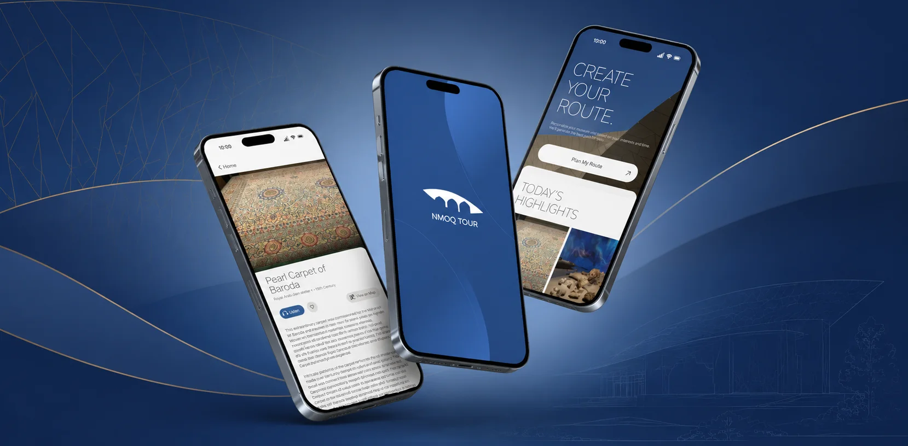
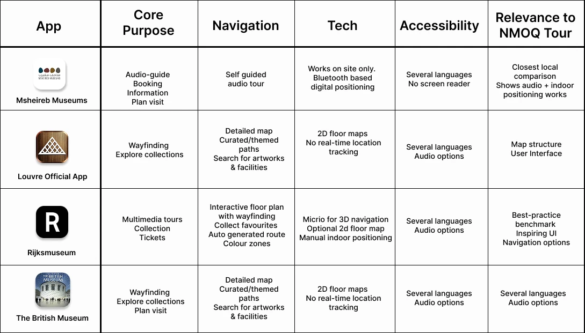
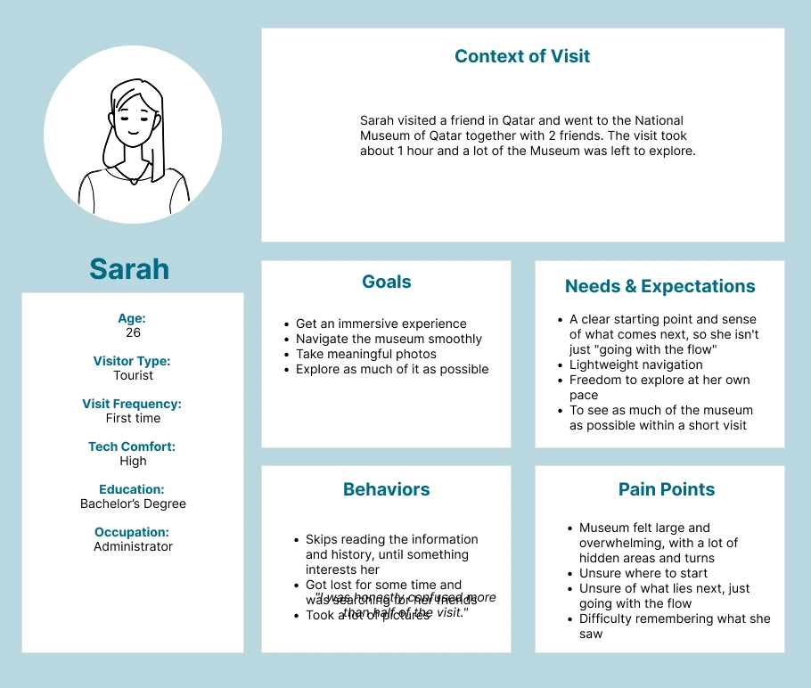
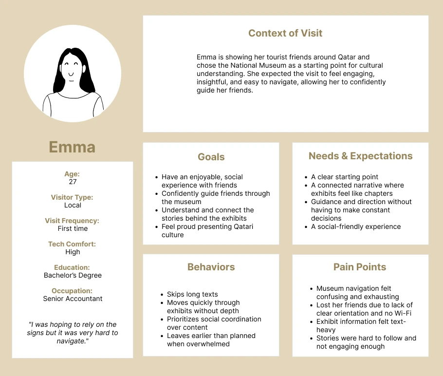
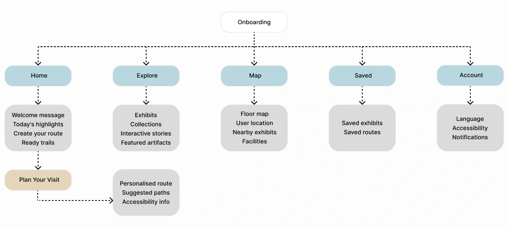
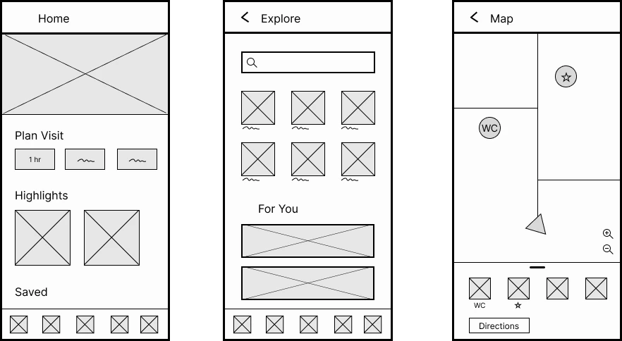

The idea started with a real visit. On a trip to the National Museum of Qatar with friends, the group kept getting lost, unsure where they were, what came next, or how much was left. They left having seen only part of the museum, and without the full experience.
To check whether this was a personal frustration or a shared one, Google reviews became the first source of evidence. The pattern was clear and repeated: visitors rely on static signage and the website to find their way, and it isn't enough.
Research into existing museum apps revealed a clear pattern. Most museums including major museums like the Louvre and the British Museum offer only static 2D maps that show the layout, but leave visitors to work out where they are. A few take navigation further with more guided, interactive maps, but truly automatic live positioning is rare and for good reason. It demands costly infrastructure, and museums have largely chosen not to invest in it.
The most intuitive approach studied wasn't the most advanced one. It was the interactive, well-structured map that guides visitors clearly and lets them orient themselves easily familiar, accessible, and realistic to build. That became the direction: a clear, guided indoor map modelled on mental models people already know, prioritizing clarity and accessibility over costly technology.
Help first-time visitors confidently navigate the museum in limited time, without reading long texts, through a real-time indoor map, zone-based navigation, and step-by-step guidance.
Beyond the personal experience, Google reviews provided real evidence. Visitors repeatedly described the same issues: poor signage, confusing entry and exit, getting lost, no Wi-Fi for the audio guide, and exhibit text that was too small to read.
A competitive analysis of four museum apps then examined how each handled navigation. A clear pattern emerged: most rely on static 2D maps that show the layout but not the visitor's position. Only the more interactive approaches, like the Rijksmuseum's, make orientation genuinely easy, guiding visitors clearly without depending on costly live-tracking technology. That intuitive, realistic middle ground became the model for NMOQ Tour: clear guidance on a familiar map, accessible to the widest possible range of visitors.
The competitive analysis below breaks down each app's approach:

Two personas, whose names have been changed for privacy, captured the core audience. Both were first-time visitors from different perspectives. Sarah, a 26-year-old tourist who had only an hour, skipped long texts, got lost looking for her friends, and missed large parts of the museum. Emma, a 27-year-old local guiding tourist friends, found navigation exhausting, cut the visit short, and was disappointed she couldn't deliver the experience she'd hoped to.
A user journey map then organized each persona's actions, thoughts, emotions, and pain points, and surfaced the opportunities the app could address at each stage.
The two personas are shown below:


Features were prioritized against the evidence where every "must-have" tied directly back to a persona pain point or a review. Six core features made the cut. Several appealing ideas (audio guide, AI object recognition, group location sharing) were deliberately set aside as "nice to have," and others (ticketing, gamification) ruled out of scope as either already solved or misaligned with the museum's tone.
The features were then organized into a clear information architecture with six main sections: Home, Explore, Map, Visit Planner, Saved, and Profile.
The resulting information architecture is shown below:

Wireframes translated the architecture into layouts, and three flowcharts mapped possible paths through the app for different visit types. These fed into the first interactive prototype built in Figma, presented in the next section.
Below are the three main pages, wireframed early in the process:

The first medium-fidelity prototype, built in Figma. Six core features, each answering a specific, evidenced need:
Swipe through the first prototype below:
The biggest lesson came from the prototype itself. I invested heavily in the UI of a medium-fidelity prototype before testing any of it, which means if testing reveals problems, some of that polish may turn out to have been premature. Next time I'd validate the core flow at a lower fidelity first, and only invest in detailed UI once the structure holds up. Fidelity should follow confidence, which means the more certain I am that something works, the more polish it's worth.
A second takeaway is restraint is a design decision in itself. Choosing a familiar map over impressive technology felt almost too simple at first, but the research showed that accessibility and familiarity matter more to real visitors than more advanced technology.
This is a first medium-fidelity prototype and has not yet been user tested. That testing is the real next step: putting it in front of first-time visitors to validate the navigation flow and the time-based planner, and to refine the routes before a high-fidelity build.
It also means being ready to kill my darlings. Despite the hours invested in this UI, testing may show that parts of it don't work for real visitors and if so, they'll be reworked or cut. The prototype is a hypothesis to be tested, not a finished answer.